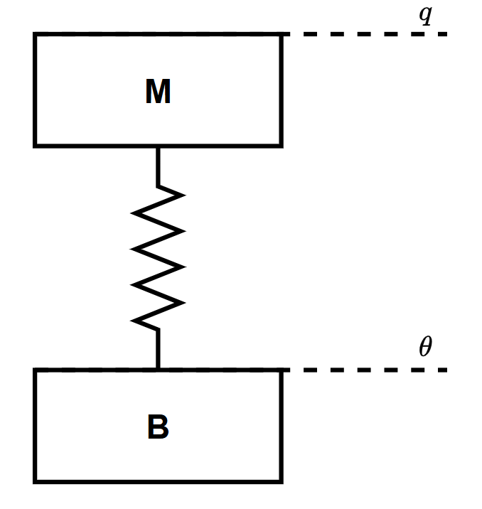
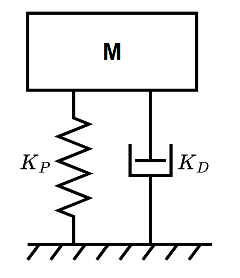
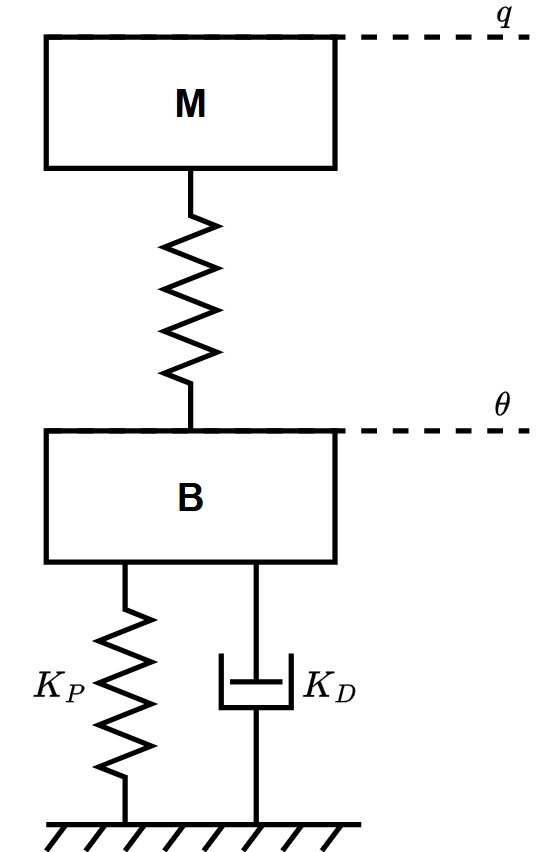
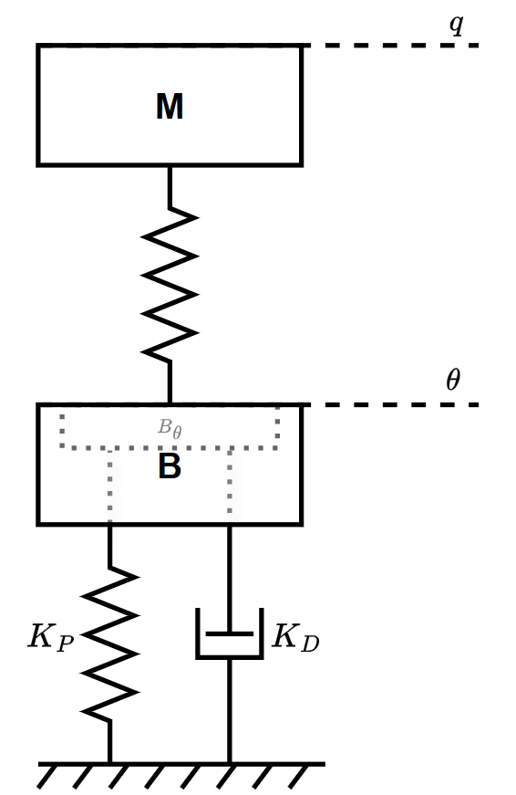
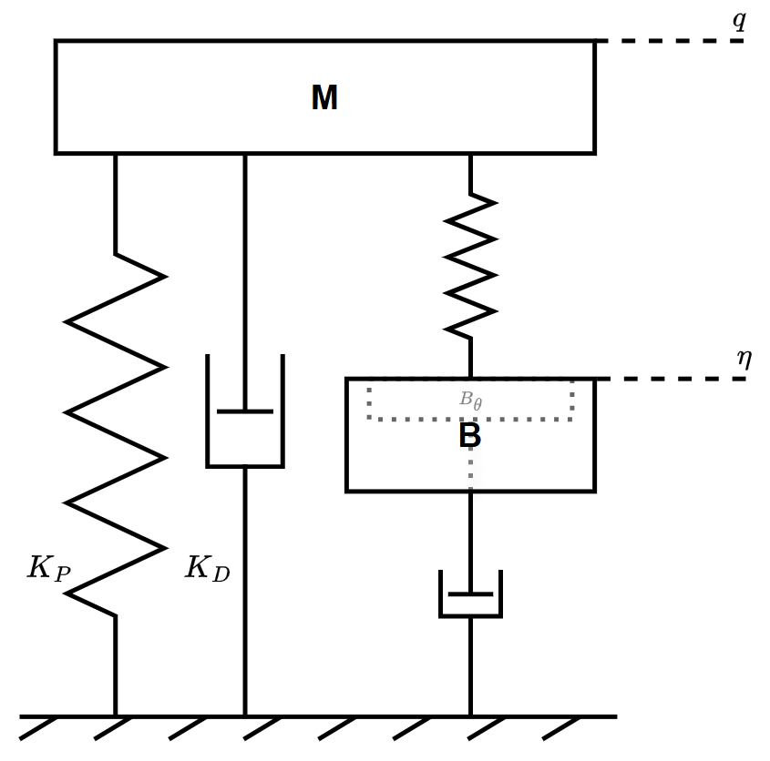

机器人关节控制
关节建模
关节的动力学模型如下：
其中$M$是负载惯量，$B$是电机惯量，$\theta$是负载位置，$q$是电机位置，$\tau_m$表示电机输出转矩，$\tau_{ext}$表示负载端所受外力。$\kappa(\cdot)$表示关节的物理特性。
对于线性模组，不考虑阻尼，Spong方程：

有力矩传感器时，可以测得关节输出转矩$\tau_s$：
理想控制目标
理想情况下，希望PD控制直接作用在负载$M$上：

动力学方程为：
这种理想阻抗特性为：
方案一：单编码器PD控制
对于单编码器的PD控制，只能获得电机端的位置$\theta$，关节具有柔性：

如果认为关节仅存在弹性，且弹性不变，那么：
我们无法将期望力 $\tau_{des}=-K_P q - K_D \dot{q}$ 输出给连杆M，只能施加给电机。
此时的阻抗特性为（线性模组）：
方案二：全闭环PD控制
全闭环控制是能够同时获得电机端位置（$\theta$）和末端位置（$q$）。
这是一种非共位（non-collocated）控制，即获取反馈的位置与施加输入的位置不同。
这种PD控制使用了末端位置传感器，但输出力 $\tau_m$ 却在电机端。
这是一种很不自然的控制方式，是非最小相位系统，极易产生振动，不能直接使用。
实现时需要结合轴端编码器反馈$\theta$滤波。
方案三：转矩闭环（四环控制、奇异摄动法、CIC）
转矩闭环是最直观且简单粗暴的方法： 既然无法直接控制末端的力，那么直接做一个转矩闭环强行让末端输出期望力矩。 这种控制方式的关键在于：转矩闭环带宽必须远高于外环PD 控制率为： $$\begin{array}{c} M\ddot{q}=\tau_s\\ B\ddot{\theta}+\tau_s=\tau_m\\ \tau_m=K_{P\tau}(\tau_{des}-\tau_s)+K_{D\tau}(\dot{\tau}_{des}-\dot{\tau}_s)\Longrightarrow \tau_s\ \approx \tau_{des} \end{array} $$ 最后一个方程必须要远快于前两个方程收敛。 $$\begin{array}{c} M\ddot{q}=\tau_s+\tau_{ext}\\ B\ddot{\theta}+\tau_s=\tau_m\\ \tau_s=K(\theta-q)\\ \tau_{des}=-{K_P}{q}-K_D{\dot{q}}\\ \tau_m=K_{P\tau}(\tau_{des}-\tau_s)+K_{D\tau}(\dot{\tau}_{des}-\dot{\tau}_s) \end{array} $$ 这也是一种“强迫稳定”的方式，如果最后一个方程无法快速收敛，那么整个系统会发生振动。 阻抗特性为： $$Z_{CIC}=\frac{\tau_{ext}(s)}{\dot{q}(s)} = \frac{ M B s^4 + M K K_{D\tau} s^3 + M K(1+K_{P\tau}) s^2 + K(B-K_{D\tau}K_D)s^2 + K(K K_{D\tau}-K_{P\tau}K_D-K_{D\tau}K_P)s + K[K(1+K_{P\tau})-K_{P\tau}K_P] }{s \left( B s^2+K K_{D\tau} s+K(1+K_{P\tau}) \right)}$$ $$\frac{\tau_{ext}(s)}{\dot{q}(s)} = \frac{ M B s^4 + M K K_{D\tau} s^3 + \left[ M K(1+K_{P\tau}) + K(B-K_{D\tau}K_D) \right] s^2 + K(K K_{D\tau}-K_{P\tau}K_D-K_{D\tau}K_P)s + K[K(1+K_{P\tau})-K_{P\tau}K_P] }{ B s^3 + K K_{D\tau} s^2 + K(1+K_{P\tau}) s }$$ # 方案四：电机质量整形从这个方案开始，开始正视关节柔性，想办法顺应关节柔性，而不是强迫柔性稳定。
这个方法的思路是想办法减小电机的等效惯量：

期望动力学方程：
如果$B_\theta\ddot{\theta}$这一项足够小，那么我们就可以认为$\tau_s\approx\tau_{des}$，就达到了最终控制目的：
动力学方程如下：
需要设计 $\tau_m$ 的控制率，使得期望动力学方程成立，因此：
这种方式减小了电机的等效惯量，并且依然保持了系统的无源性。
阻抗特性与单编码器PD相同，只是电机惯量由$B$减小为$B_\theta$：
考虑极端情况$B_\theta=0$：
方案五：保留弹性环节的控制（ESπ）
ESπ控制方式保留了原来的关节弹性结构，并且引入了新的坐标$\eta$：

同时对电机惯量整形，控制目标：
实际模型：
需要设计 $\tau_m$ 满足上式。
那么：
可以得到：
联立两方程的第二个式子可以得到控制率：
这种方式实现了直接控制末端的力，同时还保留了原有的电机惯量，关节弹性等环节，保证了系统的无源性。
同时，还对原有环节进行整形，重新设计弹性，惯量，并加入了阻尼，提高了系统的稳定性。
总控制率（考虑线性关节）：